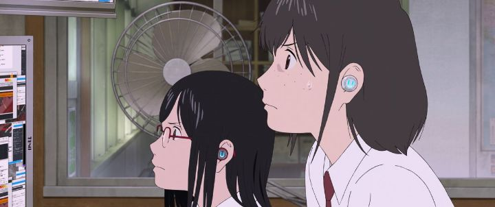

Mamoru Hosoda is one of the most celebrated anime film directors in Japan, out of those currently working (aside from the never-ending man, Miyazaki). But he had also been in kind-of a rut: he finished a trilogy of thematically-similar movies in "Wolf Children," "The Boy and the Beast," and "Mirai." Each was an intimate and sentimental view on family relationships. But they felt too similar, to a fault. Thankfully, Hosoda decided to try something new with his 2021 film "Belle"... by going back to the themes of his other movies, "Summer Wars" and "The Girl Who Leapt Through Time." With a dash of Disney's "Beauty and the Beast" for some reason.Yes, the early press would keep stating that this was a modern take on the classic fairy tale. Press releases also teased that international talent would be involved this time, including a character desginer from Disney in the USA and background work from Irish studio Cartoon Saloon. In early 2022, the movie got a wide theatrical release: not just for a day or two, but multiple weeks, including on select IMAX screens. When did you ever see anime in IMAX? GKIDS was betting hard on Hosoda's latest, putting all that Ghibli money to good use. Surely, this would be the director's biggest and best film yet... right?That's the thing. "Belle" is a much more complex movie, and could be regarded as his best... but feels more like his worst instead. Perhaps it was a little too ambitious for its own good.Anyway, to start off, the lead character Suzu, a high school girl that's incredibly shy, always hiding in the background and avoiding louder, more popular classmates. We learn that this is partly due to the early death of her mother, from an accident during an attempt to save another child. Struggling to cope, Suzu took a mutual love of music and art from her mother and tried to deal with the loss, but that hurt and her timid nature made it difficult to sing out loud without literally getting sick. Naturally, her single father, geeky best friend, and stoic childhood-friend / potential-crush all worry for Suzu, but she doesn't want to talk about it, just quietly getting by in a small town out in the boonies.Enter the world of "U," a metaverse-VR-social-media platform taking the planet by storm, with billions of users and counting. Their motto: You are "U", and "U" becomes you (or something like that). Using advanced technology from your smartphone and some wireless headphones (don't bother trying to figure out how the tech works), it generates a unique avatar for you and allows you to explore a massive, colorful virtual space. Here, given a new name ("Bell") and a beautiful character ("... is that really me?" she asks at the start), Suzu has the courage to sing, even if just for herself. Except, you know, there's like a hundred million other people hearing her sing, captivated by her beauty, and Bell becomes the most famous character on the platform. With her friend Hiroka helping out, she continues to lead this secret life online while trying to hide her real identity. And things get complicated when a mysterious creature known as "The Beast" storms into one of her digital concerts, sparking Suzu's curiousity to his true nature. On paper, it doesn't sound too complicated, but "Belle" is dense with detail, and the multiple plot points overcrowd each other. Including the earlier "Digimon" movies, this is now the third time Hosoda's dealt with the virtual world, but it's never been more topical: in 2021, companies have publically begun developing towards a "metaverse," so the technology shown here might only be a few years away. It touches briefly on the nature of online behavior (something that's evolved immensely since 2009's "Summer Wars"), typically toxic and filled with hate against each other, and spreading rapidly within minutes. There's enough subtle commentary in the movie to write essays on the topic: one of the best scenes is when young children show support to The Beast for being targeted, only to be drowned out by cynical young adults cheering for his blood. Curiously, the movie doesn't seem too invested in heavy-handed critism of online networks though. Simiar movies and shows don't tend to shy away from the cruelty associated with the Internet, but "Belle" remains subtle, and largely accepting "U" as simply the setting of the story, not the theme. In a way, I appreciated that, since I never liked watching cruelty on screen anyway. It's also more accurate to modern sensibilities: by now, everyone KNOWS social media is bad, and they could easily choose to unplug and talk with their neighbors instead, but they continue to insist the platforms are essential, so they continue, and may always continue, to be a part of everyone's lives. Accept it, and set your stories in it, not about it. All the same, I can imagine the choice to not touch on it more would leave some viewers wanting. Instead, we have the "Beauty and the Beast" story, only really beginning about halfway into the movie. It's clever in some ways, but over the top and shoehorned in others. It even goes so far as to recreate iconic scenes from Disney's version, enough so for me to worry about copyright law. The Beast's actual purpose in the story is that he's a violent individual, constantly fighting off opponents, typically the in-world police and superheroes of "U" (yet another storyline) that try to stop his destruction. Bell's curiosity eventually tracks him down to a hidden castle, showing he has a softer side. The movie never fully addresses why "U" gave him such a monstrous appearance, "tailored to be unique to him, based on his biometric and personality yadayada." But the artful bruises on his back, those are a clue. The movie then spends its plot on the mystery of the real identity of the Beast, before "U"'s police finally reveal him. There's a bunch of side-characters and friends in Suzu's life that are suspect, but it turns out almost all of them are inconsequential in "U": it turns out to be a stranger on the otherside of Japan, with a backstory that leads to an emotional, and genuinely scary cilmax.Sure, fine, but was the usage of the entire "Beauty and the Beast" storyline necessary? It artificially extends the movie by an extra 30 minutes, and over-complicates an already dense story. It would have been wiser to cut stuff out and not mention any comparisons to the old tale, but maybe it helped make it easier to promote the synopsis. And there's a bunch of subplots of Suzu dealing with a potential love, and another girl who might love the same guy, and some other romances. This feels more in Hosoda's wheelhouse. In fact, the entire "real-world" cast becomes quite lovable, and the love confessions are some of the best scenes in the movie, far more lighthearted than the rest. But there are a lot of separate characters in both the real and virtual world, about half of whom are ultimately meaningless to the story, such that a few minutes could have been cut and they'd have entirely gone missing, and no one would have noticed. The crutch is Suzu herself: she's such a gloomy, depressed girl, that it's difficult to like her as a main character until she grows in the final act. Again, the story, world and characters are more detailed here than normal for the director, but this comes at the risk of attractiveness to the audience. The production values on "Belle" are generally very good. The world of "U" is virbrant, and the real world has more visual detail than I've recognized in prior movies. In a deliberate and smart choice, "U" is entirely CGI, looking artificial and pretty (as it should), while the real world is entirely 2D-animation, even scenes with a ton of characters in them. The design of Bell looked overly-decorated in the marketing, but I fell in love with her beauty in animation, and she's an interesting blend of both Japanese and American design tastes. However, there's also a lack of a design philosophy or personality in both worlds to tie the picture together, and the animation isn't as maticulate as previous movies by the studio.Which leads us to the best part of the movie: its music. Specifically, the songs. Bell's storyline involves her love of singing, after all. And those vocal songs are jaw-dropping. GKIDS made a bold choice to have the English dub translate, and sing, the songs in English too. It might not be as powerful as the original Japanese (the lyrics come past to match lipflaps, so this ain't exactly gonna feel like a Disney musical), but it gave me the chills in the theater. Both actors (Kaho Nakamura and Kylie McNeill) were incredible. And the songs alone make "Belle" a worthwhile cinematic experience. Otherwise, it's still a good movie with a lot of story to chew on and details to appreciate, but it's definitely overcrowded (feeling like two movies pushed into one), and continues to rely on Hosoda's tried-and-true themes, some of which he should keep using and others he should definitely let go.
- "Ani" More reviews can be found at : https://2danicritic.github.io/ Previous review: review_Belladonna_of_Sadness Next review: review_Berserk_-_The_Golden_Age_Arc_(The_Egg_of_the_King,_The_Battle_for_Doldrey,_The_Advent)